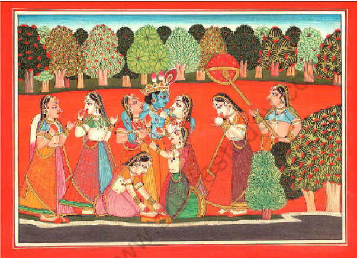

Krishna with Gopis
Details
SUBJECT MATTER :- This painting is a horizontal painting. This illustration was taken from Geeta-Govinda series which was written by Jayadeva. The painting deals with the legends and stories of Radh and Krishna. This symbolises the soul's devotion to God
DESCRIPTION:- This horizontal painting consist of total of eight gopis. The blue-skinned charmer, Krishna is standing in the center of the painting in his yellow garments (pitamber). He is fondly embracing two of the gopis beside him. Two gopis are kneeling , out of which one is holding Krishna and the other one is touching his feet. One gopi in the painting can be seen with folded hands at the right which probably could be Radha, behind her is standing her attendent who is fanning her with a round fan. Two gopis are standing at the left to Krishna talking to each other. The farthest left one is holding a chauri in her hand.
From this painting one could see that there is no competition to win Lord Krishna's attention. All gopis are putting their best efforts to please him and are not fighting for him. Krishna's crown had been elaborately deigned with shiny color for gold and a feather on top. All gopis have similar face and are ornamented with green beetle wings. The short figures in this painting signifies the folk art influence. The artist had styled faces, large and bullging eyes in shape like a lotus, high sloping forehead with a backward hairline pushed. The noses are in the same contour as the foreheads. Like the dancers, the hands and feet of gopis are colored in red. The artist used bright and bold colors. The painting also gives lustrous enamel quality.
Yamuna river can be witnessed flowing the foreground along the width of the painting. A few trees of same height are to the right , the only difference is the shape of leaves and colors. There is a mistake in this painting, the line of horizon is going beyond the tallest figure of the painting, Krishna. Maybe the artist wanted to give emphasis to the charcters by stretching the plain ornage background. Stylisation has been done for ornamental purpose. The devotion of gopis is complimented by the beauty of nature. The vibrant orange background lends an extraordinary luminous intensity to the painting.
HUMAN VALUES:
1.Love, faith, devotion and surrender for supreme power (which is Krishna here).
2,Equal love for all, Krishna loves all his followers.